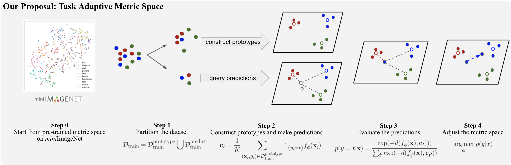
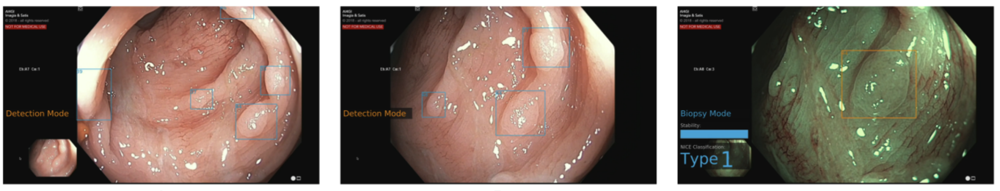
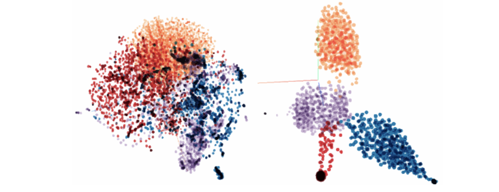

My Research Interests¶
My research focuses on representation learning with 3D data, self-supervised learning, few-shot learning, and domain adaption.
Task Adaptive Metric Space for Medium-Shot Medical Image Classification¶

- 22th International Conference on Medical Image Computing and Computer Assisted Intervention (MICCAI), 2019
- Full paper
- poster
Artificial Intelligence for Real-Time Multiple Polyp Detection with Identification, Tracking, and Optical Biopsy During Colonoscopy¶

- Journal of Gastroenterology, 2019
- Full paper
A Single Framework for Domain Adaptation and Generalization in Medical Image Analysis¶

- Montreal AI Symposium (MAIS), 2018
- Full paper
- poster
Apparatus and method for detecting, classifying and tracking road users on frames of video data¶
- US Patent, Application US16/535,547 events
- Full description
Deep-learning-based multiple object tracking in traffic surveillance video¶
- Master Thesis, McGill University, 2018
- Full paper
Generation of spatial-temporal panoramas with a single moving camera¶
- 13th Conference on Computer and Robot Vision (CRV), 2016
- Full paper
- Video